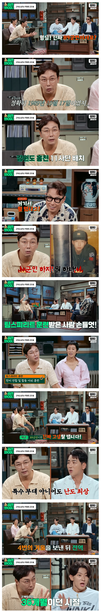

11사단 일반대대급 부대가 어지간한 수색대보다 훈련을 많이함.
그냥 순수 훈련일정이 많음.
사단특성 자체가 전군에 3개뿐인 기동사단(기계화사단)이라, 작전목적도 방어보단 공격인 사단임.
훈령일정이 일반보병사단이랑 괴를 달리함.

11사단 일반대대급 부대가 어지간한 수색대보다 훈련을 많이함.
그냥 순수 훈련일정이 많음.
사단특성 자체가 전군에 3개뿐인 기동사단(기계화사단)이라, 작전목적도 방어보단 공격인 사단임.
훈령일정이 일반보병사단이랑 괴를 달리함.
저분을 비하하는건 아니고 이상하게 다들 36개월했다고 그러는데 84년부터 93년까지 30개월이었음. 70년대군번쯤 되야 36개월이었을거임.
11사가 기보전환이전에 행군거리1등이었지
딴것보다 폭력이 난무했을거 같다.
11사단이 예전에는 보병사단이였고 젓가락부대인데 행군 많이해서 다리가 젓가락 된다고 불린 별명임
지금이야 기갑사단이라 잘 안하지만
저 시절 젓가락가면 다리 병신되고 오뚜기 가면 다리 다 닳아서 없어진다고 했었음....
다른얘기지만 작전사단 수색대여서
21개월 근무에 혹한기 한번만 지내봤음
그래서 유격훈련 조교나가는 녀석들만 보고
유격훈련은 해본적이 없다
저때 11사단이 무슨 기동 사단이였냐 그냥 행군 오질라게 많이 하는 사단이였지 그리고 89년 군번은 보병 30개월임...
2010년대 udt랑 비교하면 89년 군대 시절이 더 끔찍하지
ㅇㅇ 군대가 힘든 건 훈련보다 사람이 더 큼
거기다 3년이다...?
울 아버지도 80년대 군번이셨는데
그 당시에 지역감정도 심해서
어느 지방 사람이 왕고냐에 따라 군생활이 극명해졌다라
울 아버지가 경남 사람인데 전라도 고참한테 개머리판으로 귀맞고 그이후부터 지금까지도 차 운전 못하심 자전거도 못타
ㄷㄷㄷㄷ...
울 아버진 반대로 패악질 부리던 고참 폭행해서
군교도소 가려다 하사관 가는 걸로 퉁쳐서
군복무 5년함
우리 아버지 전역날 삽들고 고참 집앞까지 찾아갔다고함 패죽이려다가 못했다고..
87인가 88군번이시고 수방사 헌병대 나오셨는데 군생활 썰 들으면 어떻게 버티신건지 참..
홍진경 왤케 이케맨처럼 입었냐?
80~90년대 군대 기록영상 보면 짬밥 진짜 개맛없게 생김
홍천이면 또 존나춥지않나
11사단 개빡세지
나 27사단인데 전면전일때 155견인포인 우리 포대가 쏠거 다 쏘고 뒤로 빠지거나 전멸나면 11사단이 우리 포대 먹고 지원 하는게 임무라고 우리 포대까지 자주포 끌고와서 쏴재끼는거 연숩하던데
홍천에서 화천까지 훈련오던데 미친듯
27사는 예비 사단(전시 공격 사단)이어서 그럼 나도 81mm 메고 화악산 뛰어댕김 ㅋㅋㅋㅋㅋㅋㅋ 구름이 우리 밑에 있었음. 육사출 작전장교왈 전쟁나면 27사는 시작 직후 1시간만에 살아남은 인간 1명이었다고, 워게임에서... 11사는 잘 모르지만, 약간 후방에 있다가 27사 올라가고나면 방어였을 듯
27사단은 15사단 7사단 몸빵치면 거기 지원 하는걸로 알고 훈련 했었고... 그래서 15사단 7사단 훈련 할때 같이 하고, 27사단 자체 훈련 한다고 해서 훈련량이 존나 많은거라고 그랬음 ㅋㅋㅋ ㅅㅂ
1달에 훈련 1~2개 했었는데, 군생활중 쵴오 ㅈ같았던 적이 2번있었음. 텐트 정비(빨아서 말려서 사용)를 못하고 쓴 텐트 그대로 들고 다음 훈련 나간적이 무려 2번임... (사용한 텐트 넣어놓은 더블백을 풀지않고 바로 추진보냄) 야발
훈련,복귀행군. 하다보면 할만한데 텐트정비 ㅈ같지 ㅋㅋㅋ
11사단이면 거기까지 걸어갔을수도 있어
괴를달리함 궤로고칠것
저때 군생활 했던 작전장교가 대대본부 애들 똥먹였다가 영창갔지ㅋㅋㅋㅋ
난 아빠가 첫째인줄 알았는데
알고보니 큰 형에 군대에서 돌아가셨다고 하더라...
기기괴괴
궤를 달리한다는 말은 보통 말이 아니라 텍스트로 더 많이 보는 문장 아니냐?
육군 복무 기간 변천사 요약
1953년 ~ 1958년: 36개월
1959년 ~ 1961년: 33개월
1962년 ~ 1967년: 30개월
1968년 ~ 1976년: 36개월
1977년 ~ 1978년: 33개월
1979년 ~ 1983년: 33개월
1984년 ~ 1992년: 30개월
1993년 ~ 1993년: 26개월
1994년 ~ 2002년: 26개월
2003년 ~ 2017년: 24개월
2018년 ~ 현재: 18개월
궤
홍진경 씬스틸러 머꼬 ㄷㄷ
괴는 시발 ㅋㅋㅋㅋㅋ